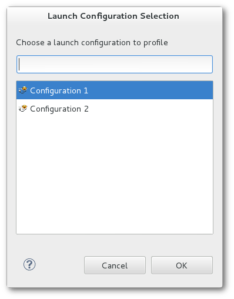
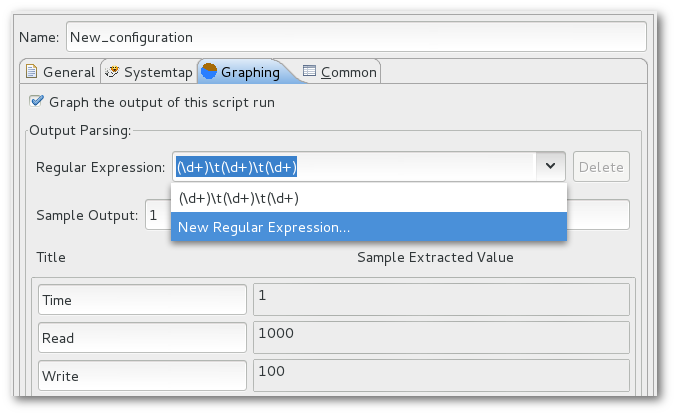

| SystemTap IDE | ||
|---|---|---|
|
|
|
|
| SystemTap User Guide | SystemTap Graphing | |
In this tutorial we will orient you with the SystemTap IDE and its functions. At this point we assume that you are able to run SystemTap plug-in and are unfamiliar with how to proceed. If you cannot yet start the application, please refer to our Installation help page. NOTE: If this is your the first time opening the SystemTap IDE, it will take a while to load as it has to parse the tapsets.
The SystemTap IDE's purpose is to allow the user to create, view, and edit SystemTap scripts. There are other editors built in (plain text and the C editor), however, they ultimately exist to facilitate the writing of SystemTap scripts.
In this lesson we will open a new SystemTap script file to familiarize ourselves with the SystemTap IDE. If you don't already have a project you plan to put your new script in, start by creating a new one. Select the File menu -> New -> Project -> General -> Project. Follow the wizard to create a new project.
Now you are ready to create the script. Select File -> New -> Other -> SystemTap -> SystemTap Script. Follow the wizard to provide your script name and the project which will contain it (use the project we created above).
This should open up a new editor with a small stub of a script.
At this point proceed to Lesson 2: Writing Your First Script if you wish to learn how to write your own script file or Lesson 3: Running Your Script if you wish to run this one.
In this tutorial we will guide you through the process of writing your first SystemTap script. It is strongly recommended that you review the SystemTap website's tutorial - http://sourceware.org/systemtap/tutorial for up-to-date information on the latest version of SystemTap.
In the previous lesson we created a new script and opened it in the editor.

Now try writing a new script or type/copy the following example:
global read, write, start
probe begin {
start = gettimeofday_s()
}
probe syscall.write {
write += count
}
probe timer.ms(1000) {
printf("%d\t%d\t%d\n", (gettimeofday_s()-start), read, write)
read=0
write=0
}
Now to demonstrate the functionality of the Probe Alias browser we will have you complete the read probe yourself. Start by opening the syscall folder in the Probe Alias browser. If you do not have any content in the browser, you are experiencing a problem with SystemTap installation and should refer to our Installation help page. Now search for the "syscall.read" probe alias and double click it. SystemTap IDE will insert the skeleton probe at the end of your script, and should look similar to the following:
probe syscall.read
{
/*
* available variables on this probe:
* $buf:long int, $count:long int, $fd:long int, $ret:long int,
* argstr:string, buf_uaddr:long, count:long, fd:long, name:string
*/
}
Now insert the following line into the syscall.read probe:
read += count
You may remove the comment (/* ... */) if you wish. This will count the number of bytes read and written each second and print it out. The begin probe executes first, by getting the time of day. The read and write probes increment each time the function is called. The timer probe prints the information every second.
Another way to get assistance while writing a new probe is to press Ctrl+Space at any point during editing. Doing so will provide auto-completion for partially spelled probe names, what variables and functions are available inside a probe, and documentation where available.

In Lesson 3 you will learn how to run SystemTap scripts.
In this lesson we will cover running your script. You may use either the script you wrote in Lesson two or write a new one.
There are two ways to run a script:
 Simple Run - Clicking this button in the toolbar will run the current script as the current user on the local machine, and will print all script output to the Eclipse console.
Run As... button on the toolbar
Simple Run - Clicking this button in the toolbar will run the current script as the current user on the local machine, and will print all script output to the Eclipse console.
Run As... button on the toolbar
If any of these options are used when a Run Configuration is not yet created for the script, a new one with default settings will be created for it. If multiple Run Configurations exist, you will be prompted to select which one to run the script with.

If you know which Run Configuration you want to use, you may simply click the arrow next to the
Run As button on the toolbar and select from a list of recently-run configurations.

To create a new Run Configuration, right-click on the script editor or the script file in the Project Explorer then select Run As -> Run Configurations.... Once the dialogue pops up, double click on the SystemTap tree item and you should be presented with the following dialogue:

Here you can specify the path of the script to run, enter remote host information, run as a different user, as well as various other options for running SystemTap. Explore the various tabs and options. The tooltips should provide help in understanding what the various options do. When you are ready, click Run to run your script.
Now we will demonstrate running SystemTap scripts with graphs. In order to run the chart example you'll need to use the code provided in Lesson 2: Writing Your First Script:
global read, write, start
probe begin {
start = gettimeofday_s()
}
probe syscall.write {
write += count
}
probe syscall.read {
read += count
}
probe timer.ms(1000) {
printf("%d\t%d\t%d\n", (gettimeofday_s()-start), read, write)
read=0
write=0
}
To do this, select Run As -> Run Configurations... and create a new SystemTap Launch Configuration as you did previously and switch to the Graphing tab. By the end of this tutorial, the tab will look like this:

The following instructions will walk you through the steps towards configuring the graph settings as shown above.
First, select Graph the output of this script run, and in the text box labeled Regular Expression, enter a regular expression that will match the output of your script. Place parentheses () around whatever data you want to capture for graphing.
For this example, enter the following as your Regular Expression:
(\d+)\t(\d+)\t(\d+)
Alternatively, you can click the button labeled Click here to generate regular expressions from printf statements. Clicking this button will automatically create regular expressions that will capture output created by the script's printf statements.

This expression will capture the output produced by the example script. Note that in order to capture data from script output, the output must be formatted into lines/rows. Output-parsing regular expressions try to match individual lines of script output, so make sure your scripts print a line break ("\n") to mark the end of a line. (The line break character does not need to be included in the regular expression.)
Once this expression is entered, a table of Titles and Sample Extracted Values will appear. To test that your regular expression is working as intended, you may enter as Sample Output a line of text similar to what you expect your script to produce.
For this example, copy and paste the following line into the Sample Output box:
10 1000 100
and enter the following as Titles:
Time Reads Writes
The text boxes displayed under Sample Extracted Value now show you the values that are captured by your regular expression, which will be plotted in any graphs you create that use those values.
Now to add a graph using the parsed output, click the Add... button in the Graph Set section, which will bring up the Create Graph wizard. Select a line graph as the Graph Type, and enter the following as your Title and series values, then click Finish to save your changes:
Title: Read Write Count X Series: Time Y Series 0: Reads Y Series 1: Writes
You may also specify additional regular expressions to capture output with. To do this, either press the Down arrow key while typing into the Regular Expression text box, or click the drop-down arrow of the text box and click the entry labeled New Regular Expression...

You will notice that all data entered in the Graphing menu so far, such as the sample output and graphs, will no longer visible after adding a new regular expression. This is because each regular expression has its own sample output, column titles, and set of graphs (or Graph Set) associated with it. Data for the currently-selected expression is displayed, and since the current expression is blank, so are the column & graph settings.
To capture the example script's output only at intervals of 10 units of time, use the line below as your second regular expression:
(\d+0)\t(\d+)\t(\d+)
Enter the same sample output & title values that were used for the first regular expression. Also add a graph with the same series data as before, and with a title of "Decade Read Write Counts".
When the script is executed under this Run Configuration, the Graph Selector view is opened and it will contain a Data View and any graphs you have created, with a tab for each regular expression's set of graphs. The Data View chart is populated with the output from the console. If you click on the tab labeled Graph Set 1, you should see a screen similar to the following:

Switch between the graphs in Graph Set 1 and 2 to see the difference between the two graphs you plotted. If you click on the Data View tab of either Graph Set, you will see that the data that is being parsed live from the console:

You may also create new graphs while in this view, to display data captured by your regular expressions in alternate ways. To create a new graph, first select the Graph Set you want to add a new graph to, then click on the
 Create Graph button, which appears to the left of the Data View tab. This will bring up the same
Create Graph wizard that appears when creating a graph in a script's Run Configurations menu.
Create Graph button, which appears to the left of the Data View tab. This will bring up the same
Create Graph wizard that appears when creating a graph in a script's Run Configurations menu.
This is the primary perspective for SystemTap script writers. It contains the Function Browser, Kernel Browser, Probe Alias Browser, and Views and Editors. The IDE Perspective contains the features necessary execute SystemTap scripts and the syntax coloring and code completion features that facilitate efficient development of scripts.
This editor is the most commonly used; it is used for the authoring and editing of SystemTap scripts. It is invoked when the user starts a new file or opens a file with the .stp extension. It provides syntax highlighting, code completion, and run support.

See also: Menus, Example SystemTap Scripts, Toolbars
The Function Browser lists all of the functions that are defined in the tapset library. Functions are grouped by the file that they are defined. Each listed function has an icon that corresponds to its return type.
 String
String
 Long
Long
 Void
Void
 Unknown
Unknown
If you double click on any function a call to that function will be added to the active editor at the current cursor location. Also if you right click on a function and click View Definition the tapset file where the function is defined will be opened.

The default behavior of this view is to look for functions in the tapset library in the local machine. To look for functions in the same machine used to run the SystemTap scripts, go to Window->Preferences, select SystemTap->SystemTap IDE and check the Use remote connection to load SystemTap probes and functions option. Don't forget to configure the remote server used by remote execution in SystemTap->Remote Server.
The Kernel Source Browser is used to display the kernel tree. This provides you with a quick way to locate places to add probes. Any file in the Kernel Source tree can be opened by double clicking on it. This will open up the selected file in the Editor view. You can then double click on the ruler next to any line that you wish to probe. If SystemTap can probe that line a probe point will be inserted at the end of the script you were most recently working on. If the line can't be probed, an error message will be displayed.

To use this feature it is necessary to configure the Kernel Source Location.
The Probe Alias Browser lists all of the probe aliases that are defined in the tapset library, as well as all static probes defined internally by SystemTap. Probes are grouped by name. In addition to the list of probes, each probe lists all of the variables that it has access to. Each variable is listed with an icon that represents its data type. Types are as follows:
String
Long
Unknown
If you double click on any probe alias, probe point will be added to the end of the active editor. Also if you right click on a probe and click View Definition the tapset file where the probe is defined will be opened.

The default behavior of this view is to look for probes in the local machine. To look for probes in the same machine used to run the SystemTap scripts, go to Window->Preferences, select SystemTap->SystemTap IDE and check the Use remote connection to load SystemTap probes and functions option. Don't forget to configure the remote server used by remote execution in SystemTap->Remote Server.
Create a SystemTap script by selecting File -> New -> Other... -> SystemTap -> SystemTap Script from the menu bar. You'll be prompted to enter a name for the file; make sure that you use a .stp extension or else the SystemTap IDE will not recognize the file as a SystemTap script and certain editor and run features will not be active.
Your new file will be open and ready for coding in the Editor pane.
A IDE Tutorial is also provided in the help pages for a step by step demo.
For advanced SystemTap language help please see the SystemTap Development User's Guide and the documentation available at the SystemTap website's documentation page - http://sourceware.org/systemtap/documentation.html
The STP Editor is used for the authoring and editing of SystemTap scripts. It is invoked when the user starts a new file or opens a file with the .stp extension. Using the editor is as easy as setting the focus to the editor pane and typing.
There are certain features within the editor you may want to take advantage of:
See also: Menus, Toolbars, Example SystemTap Scripts
Advanced options for running SystemTap scripts are available in the
Run Configurations menu. This menu may be accessed by right-clicking a script and choosing
Run As->Run Configurations from the context menu, by selecting
Run->Run Configurations in the menu bar, or by using the drop-down menu next to the
Run toolbar button.
It is possible to run scripts either locally or remotely, and as different users. To configure these settings, use the General tab of the Run Configurations menu.
The following options are available:
The SystemTap tab allows for the specification of many command-line options to the stap command that is to be run. View the SystemTap manual for information on these options - https://sourceware.org/systemtap/man/stap.1.html
Many options and features are available in the Graphing tab for creating graphs out of a script's output. For detailed information on how to create graphs, refer to Lesson 3: Running Your Script and the Graphing Tutorial.
Viewing data charts from a SystemTap script is accomplished by running that script with the Run Configurations containing your graphs. This is covered in Lesson 3: Running Your Script. After running a script with the graphing option, the user is presented with the Graph Selector View, and the last graph of the final Graph Set is loaded by default. When that view appears, click on the Data View tab of any Graph Set to see it begin populating as it receives input back through the console from the running SystemTap script.
This section details the views and editor in relation to the SystemTap IDE.
The IDE Perspective consists of 5 views and and two editors.


Three editors are available in the SystemTap IDE.
What follows is a comprehension list of the menu options available within the SystemTap IDE.
(Shortcut: Ctrl+F)


New File - This button will bring up a dialogue to create a new file. When you click OK the file will be opened in the editor window.
Simple Run - This will compile the open script and start running it, without using a Run Configuration. All output will be sent to the console. If there is an error in the script the error will be reported in the Error Log.
Run As - This compiles & runs the current script, but also searches for a Run Configuration that targets the script, and runs the script with the launch options provided by it. Use this instead of Simple Run when you want graphs to be plotted. (Shortcut: Ctrl+F11)
This section details each of the options listed under Window->Preferences. The Preferences dialog is used to set user preferences. Its pages can be searched using the filter function. To filter by matching the page title, simply type the name of the page you are seeking in the text box in the top-left corner of the dialog, and the available pages will be presented in the list below. The filter also searches on keywords such as "appearance" and "Java".
This section details frequently asked questions relating to the IDE Perspective.
Where can I find information regarding the SystemTap scripting language?
A: The best place to look for up to date information regarding SystemTap itself is its homepage - http://sourceware.org/systemtap/documentation.html
How do I run a script once I've written it?
A: There are two ways to run a script:
-with the
Simple Run button on the toolbar, which runs the script that has editor focus. It will be run without drawing graphs or any other configurations.
-by launching it with a Run Configuration that targets any specified script, even one that is not in the workspace.
Read Lesson 3: Running Your Script and Menus to learn more about the ways of running SystemTap scripts.
Why does the application seem to hang when switching to the SystemTap IDE?
A: If this is the first time you are trying to open the SystemTap IDE, or have recently gotten a new version of SystemTap this is expected. In order to generate a full list of all of the available probes and functions, the GUI has to run a background SystemTap process and parse the results. A future update to SystemTap IDE will reduce the duration of this operation.
What follows is a few SystemTap Scripts that you may use in SystemTap IDE, taken from and linked to http://sourceware.org/systemtap/documentation.html
There is also a description of the examples - http://sourceware.org/systemtap/examples/demo_script.txt
#!/usr/bin/env stap
#
# This script continuously lists the top 20 system calls on the system
#
global syscalls
function print_top () {
cnt=0
log ("SYSCALL\t\t\t\tCOUNT")
foreach ([name] in syscalls-) {
printf("%-20s\t\t%5d\n",name, syscalls[name])
if (cnt++ = 20)
break
}
printf("--------------------------------------\n")
delete syscalls
}
probe kernel.function("sys_*") {
syscalls[probefunc()]++
}
# print top syscalls every 5 seconds
probe timer.ms(5000) {
print_top ()
#!/usr/bin/env stap
# This is an example of profiling a specific command or pid.
# It works by recording the time when a system call is entered
# exited.
# Usage: prof.stp -c "top -n5"
# Will start up "top" and after 5 iterations, will exit.
#
# Usage: prof.stp -x 3323
# Will profile pid 3323 until it ^c is hit.
#
probe kernel.function("sys_*") {
if (target() = tid())
calltime[tid()] = gettimeofday_us()
}
probe kernel.function("sys_*").return {
if (target() != tid()) next
now = gettimeofday_us()
c = calltime[tid()]
if (!c) next
ttime[probefunc()] <<< now - c
delete calltime[tid()]
}
probe end {
printf("\n")
foreach (x in ttime)
printf("%-20s\tcalls:%6d\tavg time (ms):%5d\ttotal(ms):%7d\n",
x, @count(ttime[x]), @avg(ttime[x]), @sum(ttime[x]))
}
global calltime, ttime
#! /usr/bin/env stap
# This is not useful, but it demonstrates that
# SystemTap can modify variables in a running kernel.
# Usage: ./keyhack.stp -g
probe kernel.function("kbd_event") {
# Changes 'm' to 'b' .
if ($event_code = 50) $event_code = 48
}
probe end {
printf("\nDONE\n")
}
#! /usr/bin/env stap
# Using statistics to examine kernel memory allocations
global kmalloc
probe kernel.function("__kmalloc") {
kmalloc <<< $size
}
# Exit after 10 seconds
probe timer.ms(10000) { exit () }
probe end {
printf("Count: %d allocations\n", @count(kmalloc))
printf("Sum: %d Kbytes\n", @sum(kmalloc)/1000)
printf("Average: %d bytes\n", @avg(kmalloc))
printf("Min: %d bytes\n", @min(kmalloc))
printf("Max: %d bytes\n", @max(kmalloc))
print("\nAllocations by size in bytes\n")
print(@hist_log(kmalloc))
}
#! /usr/bin/env stap
# Using statistics and maps to examine kernel memory allocations
global kmalloc
probe kernel.function("__kmalloc") {
kmalloc[execname()] <<< $size
}
# Exit after 10 seconds
probe timer.ms(10000) { exit () }
probe end {
foreach ([name] in kmalloc) {
printf("Allocations for %s\n", name)
printf("Count: %d allocations\n", @count(kmalloc[name]))
printf("Sum: %d Kbytes\n", @sum(kmalloc[name])/1000)
printf("Average: %d bytes\n", @avg(kmalloc[name]))
printf("Min: %d bytes\n", @min(kmalloc[name]))
printf("Max: %d bytes\n", @max(kmalloc[name]))
print("\nAllocations by size in bytes\n")
print(@hist_log(kmalloc[name]))
printf("-------------------------------------------------------\n\n");
}
}
Regular expressions are used for SystemTap graphs to interpret information that it recieves from a script's output.
Basic regex (taken from " http://java.sun.com/j2se/1.5.0/docs/api/ ) -
Summary of regular-expression constructs
Construct Matches
Characters
x The character x
\\ The backslash character
\0n The character with octal value 0n (0 <= n <= 7)
\0nn The character with octal value 0nn (0 <= n <= 7)
\0mnn The character with octal value 0mnn (0 <= m <= 3, 0 <= n <= 7)
\xhh The character with hexadecimal value 0xhh
\uhhhh The character with hexadecimal value 0xhhhh
\t The tab character ('\u0009')
\n The newline (line feed) character ('\u000A')
\r The carriage-return character ('\u000D')
\f The form-feed character ('\u000C')
\a The alert (bell) character ('\u0007')
\e The escape character ('\u001B')
\cx The control character corresponding to x
Character classes
[abc] a, b, or c (simple class)
[^abc] Any character except a, b, or c (negation)
[a-zA-Z] a through z or A through Z, inclusive (range)
[a-d[m-p]] a through d, or m through p: [a-dm-p] (union)
[a-z&&[def]] d, e, or f (intersection)
[a-z&&[^bc]] a through z, except for b and c: [ad-z] (subtraction)
[a-z&&[^m-p]] a through z, and not m through p: [a-lq-z](subtraction)
Predefined character classes
. Any character (may or may not match line terminators)
\d A digit: [0-9]
\D A non-digit: [^0-9]
\s A whitespace character: [ \t\n\x0B\f\r]
\S A non-whitespace character: [^\s]
\w A word character: [a-zA-Z_0-9]
\W A non-word character: [^\w]
POSIX character classes (US-ASCII only)
\p{Lower} A lower-case alphabetic character: [a-z]
\p{Upper} An upper-case alphabetic character:[A-Z]
\p{ASCII} All ASCII:[\x00-\x7F]
\p{Alpha} An alphabetic character:[\p{Lower}\p{Upper}]
\p{Digit} A decimal digit: [0-9]
\p{Alnum} An alphanumeric character:[\p{Alpha}\p{Digit}]
\p{Punct} Punctuation: One of !"#$%&'()*+,-./:;<=>?@[\]^_`{|}~
\p{Graph} A visible character: [\p{Alnum}\p{Punct}]
\p{Print} A printable character: [\p{Graph}\x20]
\p{Blank} A space or a tab: [ \t]
\p{Cntrl} A control character: [\x00-\x1F\x7F]
\p{XDigit} A hexadecimal digit: [0-9a-fA-F]
\p{Space} A whitespace character: [ \t\n\x0B\f\r]
java.lang.Character classes (simple java character type)
\p{javaLowerCase} Equivalent to java.lang.Character.isLowerCase()
\p{javaUpperCase} Equivalent to java.lang.Character.isUpperCase()
\p{javaWhitespace} Equivalent to java.lang.Character.isWhitespace()
\p{javaMirrored} Equivalent to java.lang.Character.isMirrored()
Classes for Unicode blocks and categories
\p{InGreek} A character in the Greek block (simple block)
\p{Lu} An uppercase letter (simple category)
\p{Sc} A currency symbol
\P{InGreek} Any character except one in the Greek block (negation)
[\p{L}&&[^\p{Lu}]] Any letter except an uppercase letter (subtraction)
Boundary matchers
^ The beginning of a line
$ The end of a line
\b A word boundary
\B A non-word boundary
\A The beginning of the input
\G The end of the previous match
\Z The end of the input but for the final terminator, if any
\z The end of the input
Greedy quantifiers
X? X, once or not at all
X* X, zero or more times
X+ X, one or more times
X{n} X, exactly n times
X{n,} X, at least n times
X{n,m} X, at least n but not more than m times
Reluctant quantifiers
X?? X, once or not at all
X*? X, zero or more times
X+? X, one or more times
X{n}? X, exactly n times
X{n,}? X, at least n times
X{n,m}? X, at least n but not more than m times
Possessive quantifiers
X?+ X, once or not at all
X*+ X, zero or more times
X++ X, one or more times
X{n}+ X, exactly n times
X{n,}+ X, at least n times
X{n,m}+ X, at least n but not more than m times
Logical operators
XY X followed by Y
X|Y Either X or Y
(X) X, as a capturing group
Back references
\n Whatever the nth capturing group matched
Quotation
\ Nothing, but quotes the following character
\Q Nothing, but quotes all characters until \E
\E Nothing, but ends quoting started by \Q
Special constructs (non-capturing)
(?:X) X, as a non-capturing group
(?idmsux-idmsux) Nothing, but turns match flags on - off
(?idmsux-idmsux:X) X, as a non-capturing group with the given flags on - off
(?=X) X, via zero-width positive lookahead
(?!X) X, via zero-width negative lookahead
(?<=X) X, via zero-width positive lookbehind
(?<!X) X, via zero-width negative lookbehind
(?>X) X, as an independent, non-capturing group
Match a position that is not a word boundary.
Information regarding regular expressions can be found all over the Internet. A few examples have been listed below:
|
|

|
|
| SystemTap User Guide | SystemTap Graphing |